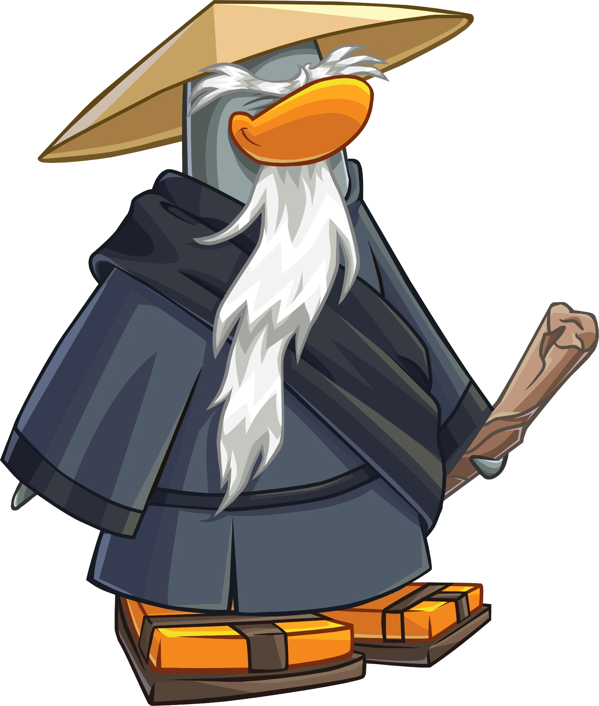

Pinguinando
Personagens

Sensei
Anteriormente conhecido como ??????, Sensei é o maior mestre de Card Jitsu. As vezes pode ser difícil entender sua personalidade, já que ele é um pinguim muito velho e sábio e costuma se comunicar por meio de HaiCais. Muitos pinguins recorrem ao Sensei em busca de sabedoria, já que ele esteve na ilha antes da maioria dos pinguins e viajou pela natureza selvagem por muito tempo. É completamente impossível derrotar o Sensei em uma partida de Card-Jitsu sem antes possuir uma faixa preta. O Sensei costuma se referir a novos ninjas como “Gafanhotos”, e carrega no pescoço uma presa rival de Tusk, seu melhor amigo de infância e também seu maior rival.